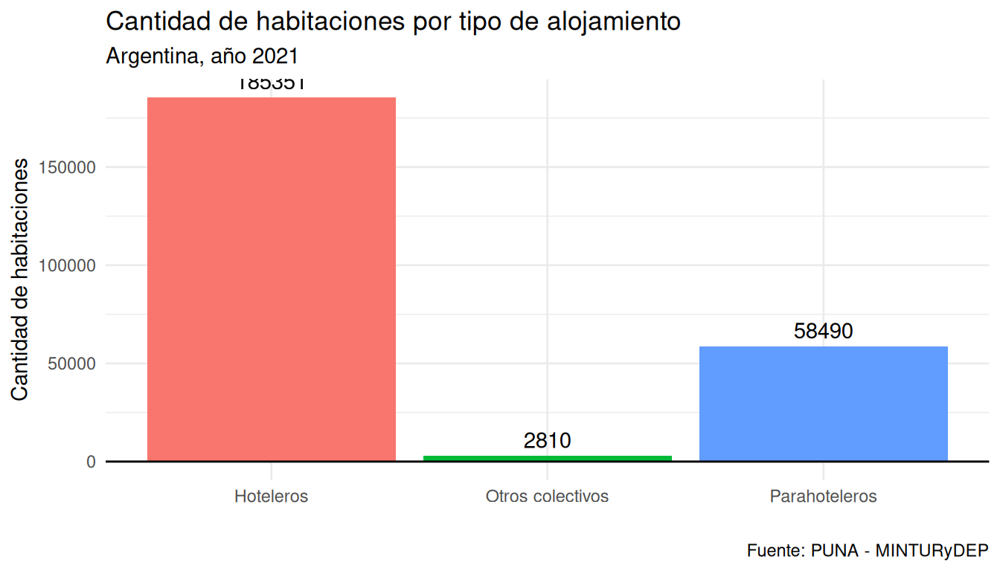
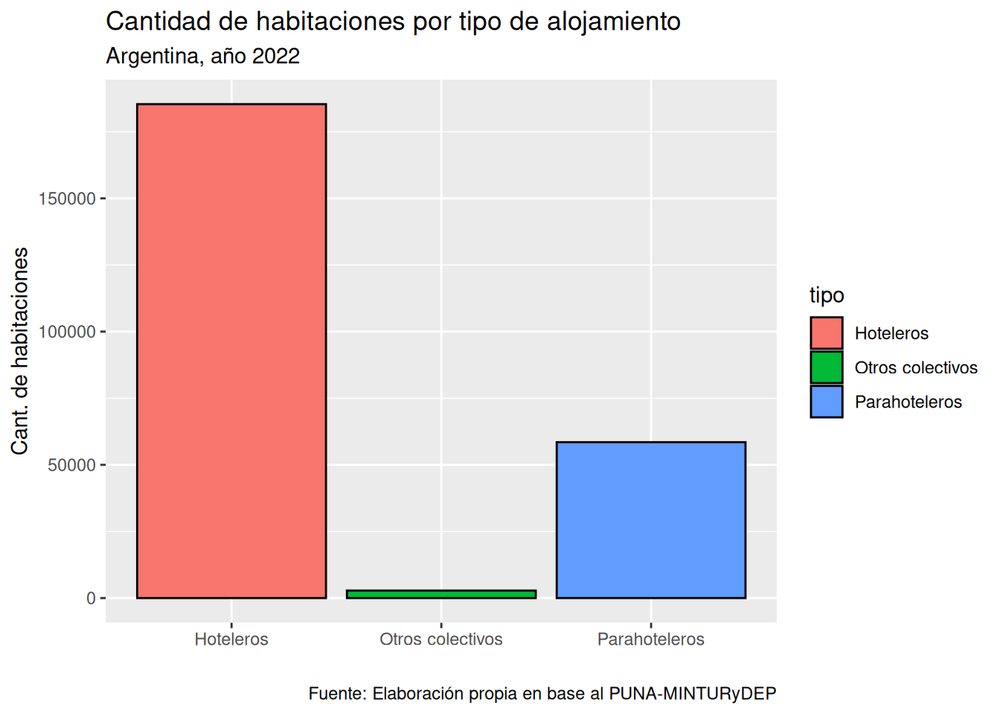
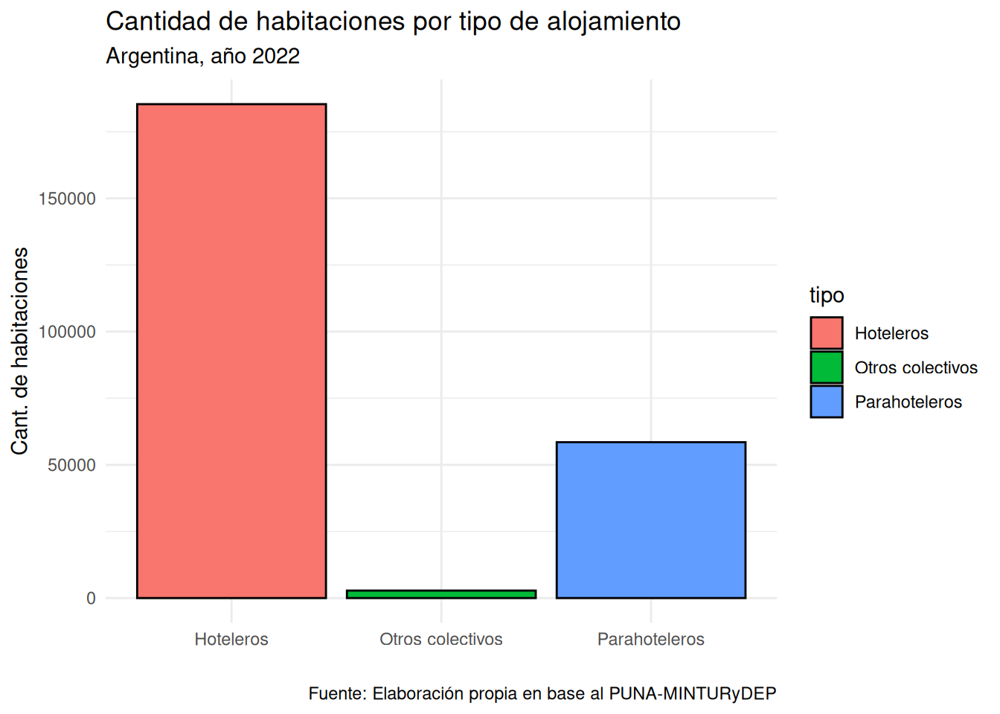
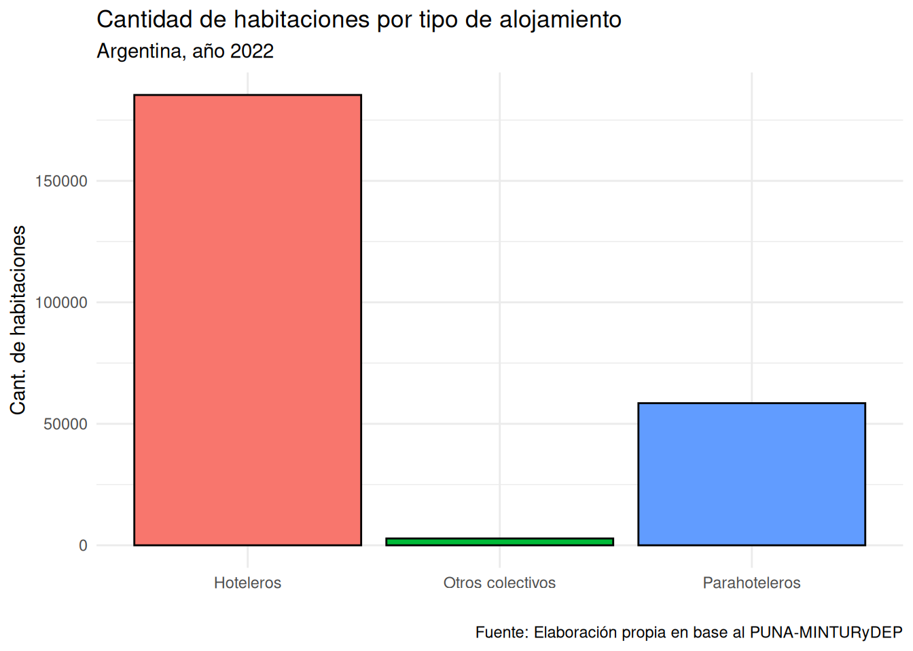

── Attaching core tidyverse packages ──────────────────────── tidyverse 2.0.0 ──
✔ dplyr 1.1.4 ✔ readr 2.1.5
✔ forcats 1.0.0 ✔ stringr 1.5.1
✔ ggplot2 3.5.2 ✔ tibble 3.3.0
✔ lubridate 1.9.3 ✔ tidyr 1.3.1
✔ purrr 1.0.2
── Conflicts ────────────────────────────────────────── tidyverse_conflicts() ──
✖ dplyr::filter() masks stats::filter()
✖ dplyr::lag() masks stats::lag()
ℹ Use the conflicted package (<http://conflicted.r-lib.org/>) to force all conflicts to become errors
Rows: 19672 Columns: 13
── Column specification ────────────────────────────────────────────────────────
Delimiter: ","
chr (8): region, ruta_natural, provincia_codigo, provincia_nombre, departame...
dbl (5): indice_tiempo, establecimientos, unidades, habitaciones, plazas
ℹ Use `spec()` to retrieve the full column specification for this data.
ℹ Specify the column types or set `show_col_types = FALSE` to quiet this message.Visualización de datos con {ggplot2}
Principales conceptos y funciones para visualizar datos con R
Bienvenidos y bienvenidas a Estación R
🍀 Linktree
🔗 Web
¿Qué vimos?
✅ Conceptos básicos de R
✅ Pensar un proyecto de datos con R
✅ Procesamiento de datos con {tidyverse}
Hoja de Ruta
📌 ¿Por qué visualizar datos?
📌 Gramática de los gráficos y {ggplot2}
- Capas y el operador `+` (más)📌 Armando un gráfico de barras (columnas)
- Función `geom_col()`📌 Chapa y pintura de un gráfico (atributos)
Configuración para esta clase
Armar un proyeto de trabajo nuevo o abrir aquel con el que veníamos trabajando
Cargar la base del Padrón Único Nacional de Alojamientos (Argentina) y chequear que esté en la carpeta
datosCrear un script de trabajo
Carga la librería
{tidyverse}
¿Por qué visualizar datos?
¿Por qué visualizar?
- “La visualización es el proceso de hacer visibles los contrastes, ritmos y eventos que los datos expresan, que no podemos percibir cuando vienen en forma de áridas listas de números y categorías.” 1
- Interpretar / decodificar la información de forma visual
- Guiar hacia el hallazago
ggplot2
Una forma de visualizar

¿Qué es {ggplot2}?
- Una implementación del sistema Grammar of graphics (Wilkinson, 2005).
- Un esquema pensado en capas (datos –> plano (ejes x e y) –> geometrías)
- Un paquete de funciones de aplicación intuitiva.
¿Por qué {ggplot2}?
Tiene un marco de referencia (El grammar of graphics)
Flexible, con especificaciones a nivel de capas.
Sistema de
themes, que permiten pulir la apariencia del gráficoDecenas de extensiones para ampliar la potencia del paquete
Comunidad activa y con mucha predisposición a ayudar.
¿A dónde vamos?

# Preparo los datos
df_habitaciones_2022 <- df_puna |>
filter(indice_tiempo == 2022) |>
group_by(tipo) |>
summarise(habitaciones_n = sum(habitaciones, na.rm = T))
ggplot(data = df_habitaciones_2022,
mapping = aes(x = tipo,
y = habitaciones_n)) +
geom_col(aes(fill = tipo)) +
geom_text(aes(label = habitaciones_n,
vjust = -0.5)) +
geom_hline(yintercept = 0) +
labs(title = "Cantidad de habitaciones por tipo de alojamiento",
subtitle = "Argentina, año 2021",
x = "",
y = "Cantidad de habitaciones",
caption = "Fuente: PUNA - MINTURyDEP",
fill = "Tipo de alojamiento") +
theme_minimal() +
theme(legend.position = "none")¿Por dónde empezamos?
Cargamos el paquete
library(ggplot2)o…
library(tidyverse)Gráfico en clave de capas
3 Capas son las indispensables al pensar nuestro gráfico:
Gráfico en clave de capas
Los datos (argumento:
data =):- El dataframe que sirve de insumo
Gráfico en clave de capas
Los datos (argumento:
data =):- El dataframe que sirve de insumo
Las aesthetics (función
aes():- Defino el vínculo entre los datos y las propiedades visuales (ejes x e y, por ej.)
Gráfico en clave de capas
Los datos (argumento:
data =):- El dataframe que sirve de insumo
Las aesthetics (función
aes():- Defino el vínculo entre los datos y las propiedades visuales (ejes x e y, por ej.)
Las geometrías (función
geom_*():- La geometría con la que se representan los datos
Gráfico en clave de capas
- Pregunta-problema: Quiero representar la cantidad de habitaciones por tipo de alojamiento, para el año 2022
Preparo los datos:
library(tidyverse)
df_puna <- read_csv("data/puna_base_agregada.csv")
df_habitaciones_2022 <- df_puna |>
filter(indice_tiempo == 2022) |>
group_by(tipo) |>
summarise(habitaciones_n = sum(habitaciones, na.rm = T))Rows: 19672 Columns: 13
── Column specification ────────────────────────────────────────────────────────
Delimiter: ","
chr (8): region, ruta_natural, provincia_codigo, provincia_nombre, departame...
dbl (5): indice_tiempo, establecimientos, unidades, habitaciones, plazas
ℹ Use `spec()` to retrieve the full column specification for this data.
ℹ Specify the column types or set `show_col_types = FALSE` to quiet this message.Gráfico en clave de capas
- Así queda nuestra tabla:
df_habitaciones_2022# A tibble: 3 × 2
tipo habitaciones_n
<chr> <dbl>
1 Hoteleros 185351
2 Otros colectivos 2810
3 Parahoteleros 58490Gráfico en clave de capas
Gráfico en clave de capas
Chapa y pintura
Chapa y pintura - Relleno
Chapa y pintura - Relleno
Chapa y pintura - Contorno
Chapa y pintura - Referencias
Chapa y pintura - Referencias
ggplot(data = df_habitaciones_2022,
aes(x = tipo, y = habitaciones_n)) +
geom_col(aes(fill = tipo),
color = "black") +
labs(title = "Cantidad de habitaciones por tipo de alojamiento",
subtitle = "Argentina, año 2022",
x = "",
y = "Cant. de habitaciones",
caption = "Fuente: Elaboración propia en base al PUNA-MINTURyDEP")
Chapa y pintura - theme
ggplot(data = df_habitaciones_2022,
aes(x = tipo, y = habitaciones_n)) +
geom_col(aes(fill = tipo),
color = "black") +
labs(title = "Cantidad de habitaciones por tipo de alojamiento",
subtitle = "Argentina, año 2022",
x = "",
y = "Cant. de habitaciones",
caption = "Fuente: Elaboración propia en base al PUNA-MINTURyDEP") +
theme_minimal()
Chapa y pintura - theme
ggplot(data = df_habitaciones_2022,
aes(x = tipo, y = habitaciones_n)) +
geom_col(aes(fill = tipo),
color = "black") +
labs(title = "Cantidad de habitaciones por tipo de alojamiento",
subtitle = "Argentina, año 2022",
x = "",
y = "Cant. de habitaciones",
caption = "Fuente: Elaboración propia en base al PUNA-MINTURyDEP") +
theme_minimal() +
theme(legend.position = "none")
::::
Footnotes
https://bitsandbricks.github.io/ciencia_de_datos_gente_sociable/visualizacion.html↩︎